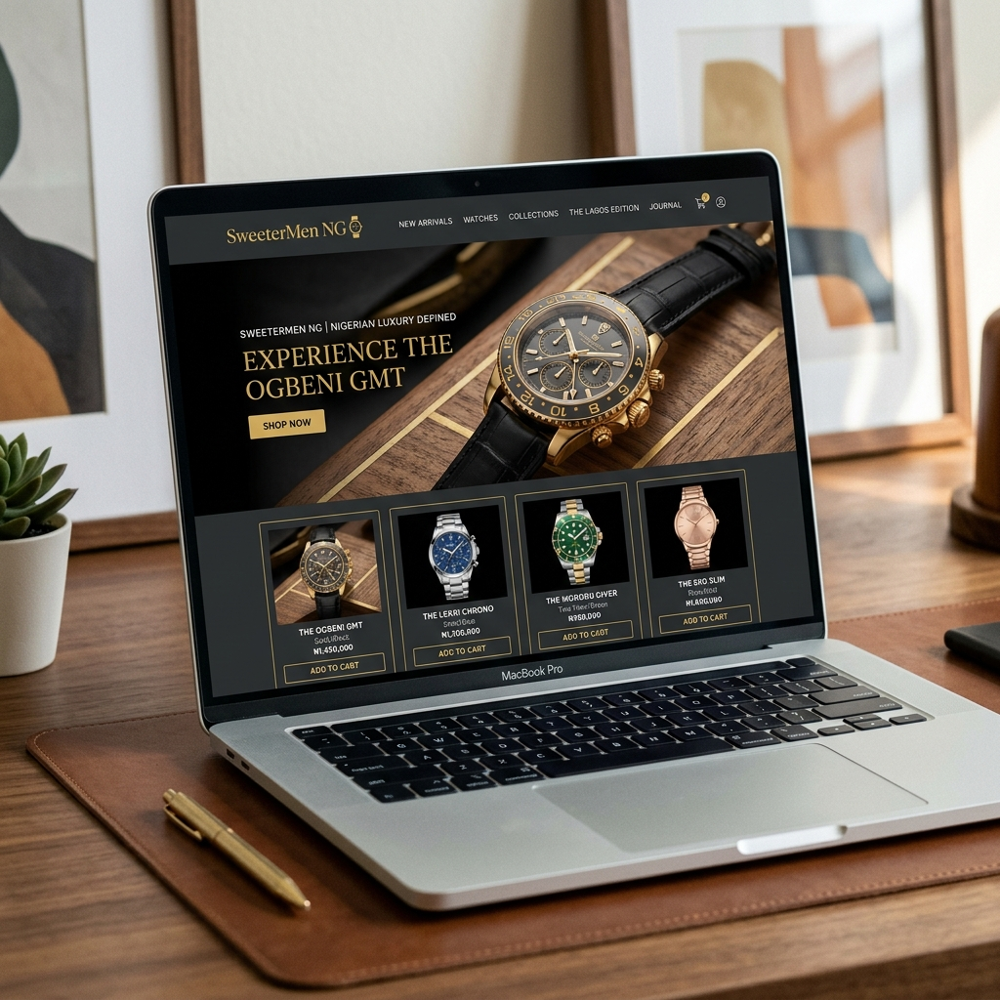

SweeterMen NG
WooCommerce Store & Marketing
Building a full-stack watch e-commerce store on WooCommerce and running high-relevancy Google and Facebook campaigns under a unified marketing funnel.

The Challenge
SweeterMen NG is a premium watch retailer aiming to scale their online sales channel. When they engaged us, they had a disorganized watch e-commerce store with low organic visibility and lacked a dedicated customer acquisition loop. They needed a robust platform that could manage watch variation data (straps, dials, pricing) and rank organically for key queries while running integrated campaigns under a single marketing voice.
Because managing e-commerce builds and social media ad campaigns across separate agencies is hard, introducing configuration mismatches and delaying launch, the client wanted a unified partner. They wanted a partner who could custom-build their WooCommerce store, restructure their product catalog, optimize search engine visibility (SEO), and run targeted social media ad campaigns from day one.
The Solution
We custom-engineered a full-stack WooCommerce watch store and ran the Google and Facebook ad campaigns that drove traffic to it, handling both design and marketing.
1. Brand Strategy & Social Media Management
We designed the brand's positioning strategy, establishing consumer demographic target profiles and messaging tones specifically tailored for high-ticket watch buyers. We carried this strategy into social media management, designing a premium grid aesthetic and publishing scheduled product content to build organic brand interest.
2. WooCommerce Watch Catalog & SEO
We custom-designed their online storefront on WordPress, building tailored watch product catalog sections, category filters, and checkout paths to capture visitor interest. We managed the entire cataloging process, launching with over 40 watch products cleanly mapped with metadata and dynamic variation details, and carrying out comprehensive web design SEO optimization.
Our Approach
We executed the watch store launch through a four-phase development roadmap, balancing e-commerce layout design with targeted ad campaigns.
Acquisition Scoping
We developed the brand strategy and audited watch search behaviors to build keyword lists and target audience parameters for Facebook and Google Ads campaigns.
WooCommerce Cataloging
We configured the WooCommerce database, cataloged watch attributes (dial sizes, strap types), and structured clean shopping collection pages.
Load Speed Optimization
We audited theme styles, optimized watch imagery, and minified assets to achieve a fast 2.1s mobile load speed profile at launch.
Unified Campaign Launch
We deployed the watch store alongside active Google Search and Facebook conversion campaigns, routing buyers directly to optimized product checkouts.
Visual Showcase
A look at the custom WooCommerce layouts, dynamic watch filters, and acquisition campaigns run for SweeterMen NG.
WooCommerce Watch Catalog
Configuring the product database, variations, and catalog layout to manage high-end watch directories cleanly for mobile shoppers.
Acquisition Funnel Setup
Configuring ad acquisition campaigns using Google Search and Facebook Ads to drive qualified buyer intent traffic directly to checkouts.

WooCommerce Speed Audits
Auditing WooCommerce database queries, minifying theme styling assets, and optimizing images to achieve a 2.1s mobile load speed.

Bespoke Performance Metrics
The same team handling both the WooCommerce store build and the Google/Facebook ad campaigns, eliminating third-party handoff delays.
Watch products uploaded and launched with dynamic attributes, structured variations, and custom images at launch.
Instant page routing and fast image queries achieved across viewports due to theme minification and database audits.